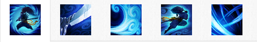

背景故事
亚索是一个百折不屈的男人，还是一名身手敏捷的剑客，能够运用风的力量来斩杀敌人。这位曾经春风得意的战士因为诬告而身败名裂，并且被迫卷入了一场令人绝望的生存之战。即使整个世界都已与他为敌，他也要竭尽所能地去将罪恶绳之以法，并恢复自身的名誉。
亚索曾是艾欧尼亚某所知名剑术道场的天才学徒，并且还是同辈中唯一能够掌握传说中的御风剑术的学生。大部分人曾相信他注定会成为一位伟大的英雄。但是，因为诺克萨斯的入侵，他的命运被永久地改变了。
技能介绍
浪客之道(被动)
亚索的暴击几率翻倍。此外，亚索会在移动时积攒一层护盾。护盾会在他受到来自英雄或野怪的伤害时触发。
斩钢闪(主动)
快捷键：Q向前出剑，造成20/40/60/80/100(+1)物理伤害。
在命中时，斩钢闪会获得一层旋风烈斩效果，持续10秒。在积攒2层旋风烈斩效果后，斩钢闪会形成一阵能够击飞敌人的旋风。
斩钢闪被视为普通攻击：它可以暴击，附带攻击特效，并且它的冷却时间和施法时间都会从攻击速度上获得收益。
如果在突进的过程中施放斩钢闪，那么斩钢闪就会呈环状出剑。
- 伤害：20/40/60/80/100
- 冷却时间：6/5.5/5/4.5/4
风之障壁
快捷键：W形成一个气流之墙，可以阻挡敌方的所有飞行道具，持续4秒。
- 墙的宽度：300/350/400/450/500
- 冷却时间：26/24/22/20/18
踏前斩
快捷键：E向目标敌人突进，造成70/90/110/130/150 (+0.6)魔法伤害。每次施法都会使你的下一次突进的基础伤害提升25%，最多提升至50%。
在10/9/8/7/6秒内无法对相同敌人重复施放。
如果在突进的过程中施放斩钢闪，那么斩钢闪就会呈环状出剑。
- 伤害：70/90/110/130/150
- 重复施放间隔：10/9/8/7/6
- 冷却时间：0.5/0.4/0.3/0.2/0.1
狂风绝息斩
快捷键：R闪烁到一个被击飞的敌方英雄身边，造成200/300/400(+1.5)物理伤害，并使范围内的所有被击飞的敌人在空中多停留1秒。获得满额的剑意值，并重置斩钢闪的旋风烈斩层数。
在接下来的15秒里，亚索会获得50%的护甲穿透加成——这个效果能够无视目标的来自装备、增益、符文和天赋的护甲值。
- 伤害：200/300/400
- 冷却时间：80/55/30
使用技巧
- 你可以将敌方小兵作为踏前斩的跳板，来追杀本已逃掉的敌人；你也可以直接突进到对方英雄身上，并将敌方小兵作为撤退时的跳板。
- 在18级时，亚索的斩钢闪只需要从装备中获取 55% 攻击速度，即可到达攻击速度上限。
- 狂风绝息斩可以对着任何被击飞的目标施放，即使这个击飞效果是你的友军造成的。
- 敌人使用疾风剑豪
- 斩钢闪的范围非常狭窄。尽可能靠边，就能躲过这招。
- 当亚索的斩钢闪连续命中两次时，他的下次斩钢闪就会形成一道旋风。要观察他的增益栏，并且留心聆听相关音效，做好躲避这招的准备。
- 亚索在发出旋风之后最为虚弱，可以趁机逼他交战。
- 亚索的百折不屈的护盾只持续2秒。对他造成伤害即可将护盾触发。先等护盾消失，然后再开战。